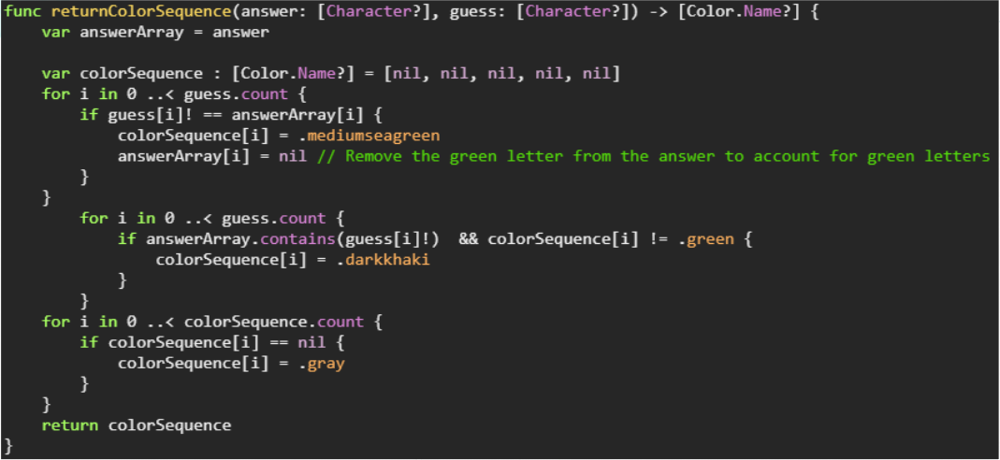
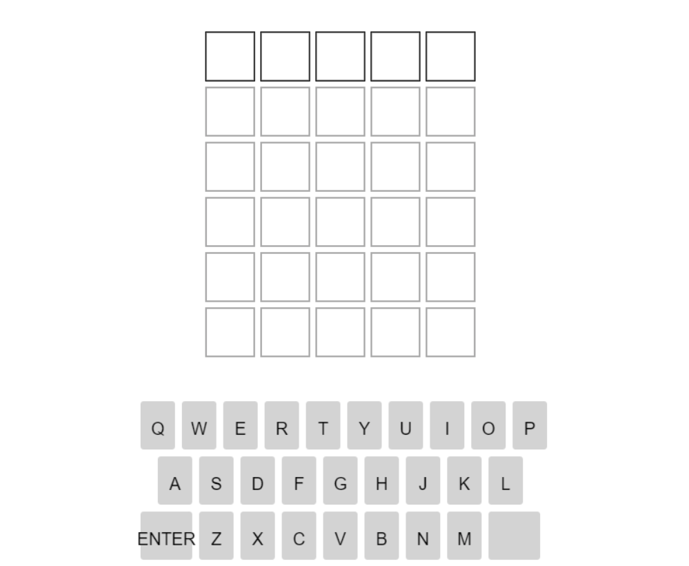
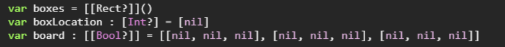
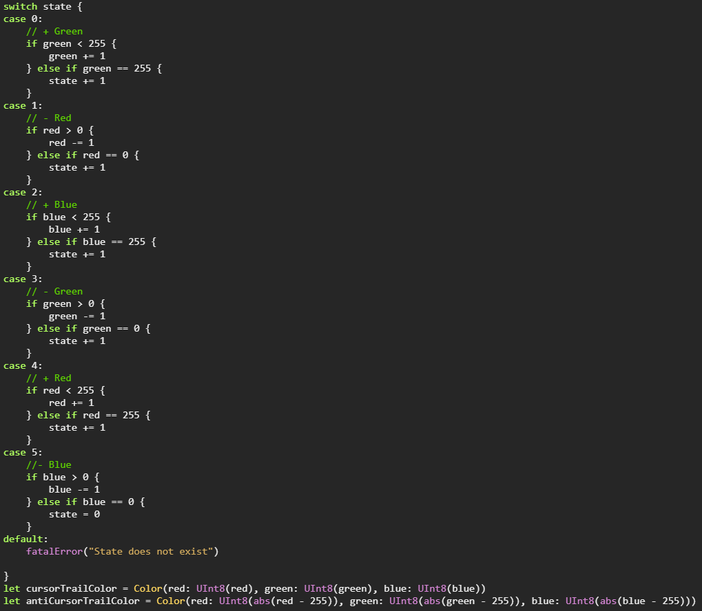
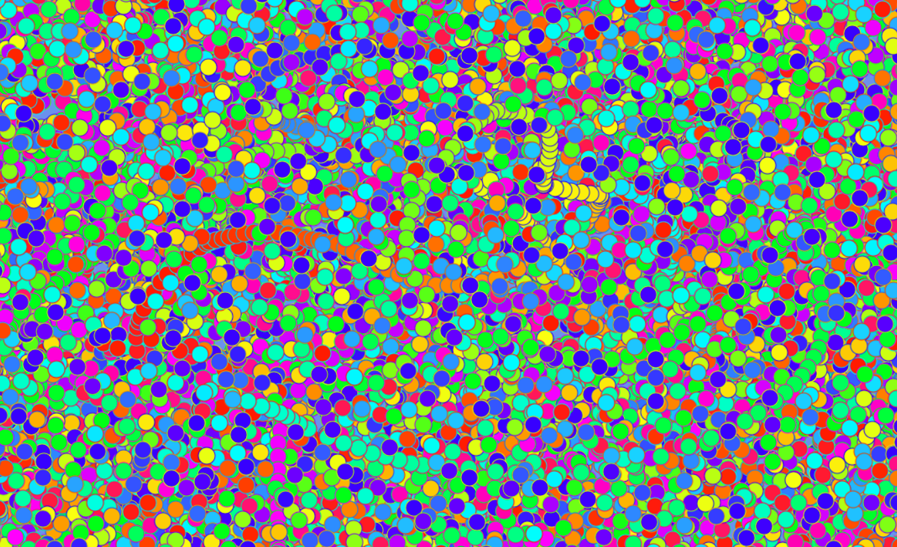

My most recent project was completed at the end of my Computer Science I class. I intened for the project to help me master the basics of switching scenes within IGIS and being able to reverse common games we all know and love.
Party Mode is divided into three separate games; the first is Worldle. Including many complicated aspects of the Computer Science I course, this minigame had a much more complex component. The algorthim used to determine the color for each letter of an input. The algorithm can be seen below.
This algorithm functions by iterating through each letter in the guess and checking if the letter is green then yellow. If the letter is green, it removes it from the answer array so that repeated letters in the guess that are incorrect will appear as gray rather than yellow. After assigning green and yellow to letters in the guess, the function iterates through to check for any remaining letters and assigns them the color of gray.
The second game included in Party Mode is Tac-Tac-Toe. It was a two player game identical to the one many played as children. Each person takes turns selecting boxes in the grid for X and O in an attempt to get three in a row before the other player can. The code utilized parallel two-dimensional arrays to identify locations on the board and the value inside. You can see its definition below.
The final game included in Party Mode is Rainbow Cursor. It was a colorful experience where a circle would follow your cursor around the screen and draw on the canvas. There was a mode where circles would apear at a random location on the canvas at every frame as well. As frames went by, the color would shift slightly by RGB values. Utilizing a finite state machine, certain values would decrease or increase depending on the state. The finite state machine is shown below.
State 0 has a starting RGB value of [255, 0, 0]. The machine then adds one to the green value every frame until it reaches 255. After that, the red begins to decrease, then blue increases, and so on. This creates a smooth rainbow transition that really tested my skills in Computer Science I. Here is Rainbow Cursor in random mode -- it is even more fun in real time!
